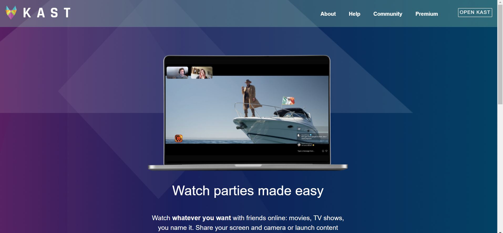

Building the workflows, systems, and operational infrastructure that help revenue teams scale more effectively.
About

Sales enablement built from real workflow friction.
I build enablement systems, CRM workflows, onboarding infrastructure, and embedded guidance that help sales teams execute more consistently.
My work combines field experience with systems thinking across onboarding, segmentation logic, messaging frameworks, workflow design, and operational enablement.
I approach systems with an agile and continuous improvement mindset focused on reducing friction, improving usability, and creating scalable workflows.
Sales Enablement & GTM Systems
Workflow architecture, onboarding systems, CRM segmentation, embedded enablement, and operational infrastructure designed to support scalable execution.
Featured System
Scalable Account Prioritization & Enablement Framework
Built a scalable enablement and CRM prioritization framework connecting segmentation logic, compliance overlays, onboarding systems, reusable messaging, and outreach execution across a 25,000+ contact database.
Impact At A Glance
- 25,000+Contacts segmented into structured account tiers and outreach paths.
- 1 Month → 1 WeekReduced onboarding time through centralized enablement systems.
- Embedded WorkflowsScripts, snippets, and personalization surfaced directly in rep execution.
- Executive VisibilityLeadership gained clearer operational and workflow visibility.
- Less Manual SupportReduced dependency on repetitive live coaching and one-off guidance.
- More ConsistencyImproved onboarding, messaging alignment, and outreach execution.
Workflow Architecture
Operational systems connecting account prioritization, onboarding, embedded enablement, execution support, and organizational visibility.
Capabilities & Systems
CRM & GTM Systems
Segmentation frameworks, workflow routing, account prioritization, and operational CRM structure.
Enablement & Training
Embedded guidance, onboarding systems, objection handling, messaging support, and centralized resources.
Workflow & Execution
Operational workflows supporting onboarding, personalization, communication, and distributed execution.
AI-Assisted Workflow Support
AI-supported research, messaging refinement, workflow support, and operational efficiency.
Supporting Projects

COVID-19 Data Search App
Built a searchable interface that organized public data into a more structured and usable experience.

Responsive Layout Recreation
Recreated a responsive web experience focused on layout structure, consistency, and translating requirements into execution.
Creative CSS Project
Early visual coding project focused on structure, creativity, and problem solving within design constraints.